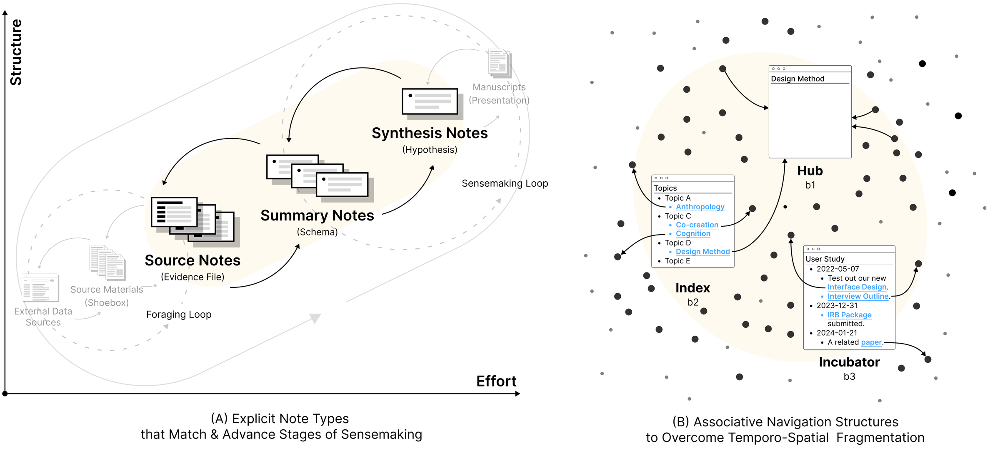
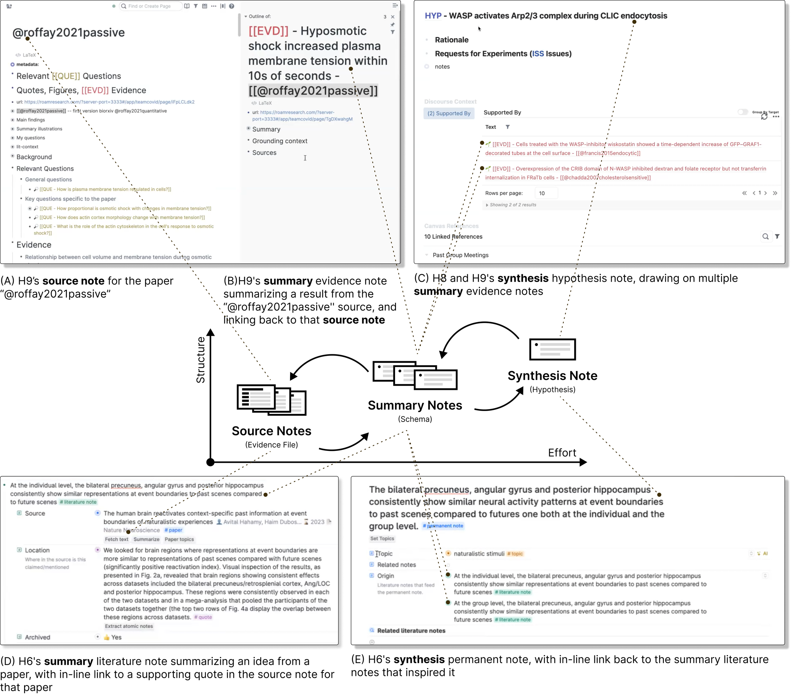
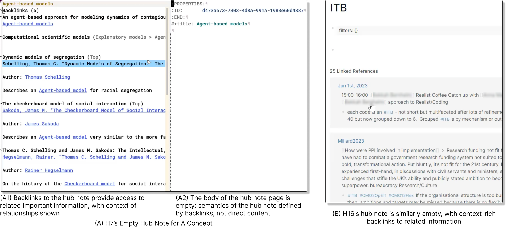
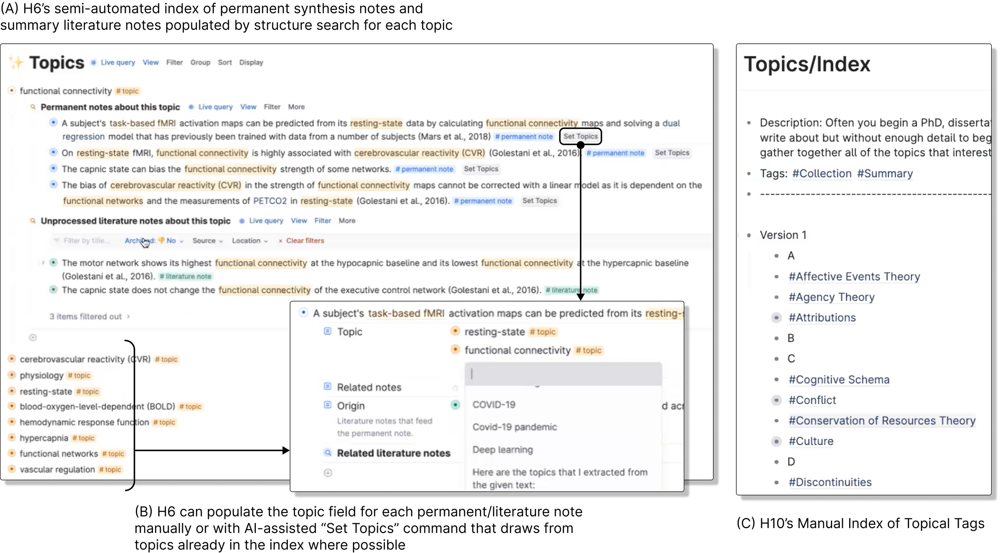
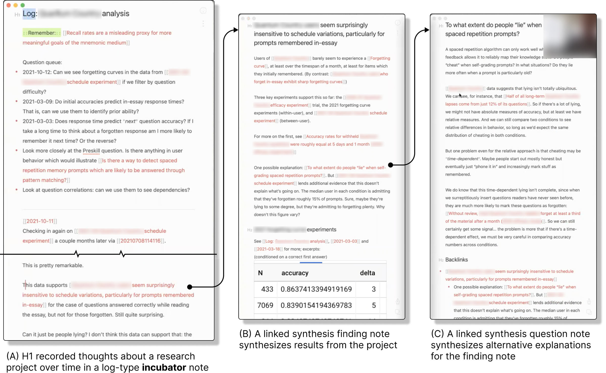

Patterns of Hypertext-Augmented Sensemaking
2024
UIST 2024 · Siyi Zhu, Robert Haisfield, Brendan Langen, and Joel Chan
Scholarly thinking unfolds across papers, notes, tools, and interrupted work sessions. Through guided tours with 23 scholars, including 16 users of modern hypertext notebooks, we examined how researchers manage this fragmentation. The study identifies explicit note types and associative navigation structures that help researchers revisit information and develop ideas over time.
23 scholars
16 hypertext users
7 supplementary participants
Read the publication
CC BY 4.0
The work before the work
Before researchers can synthesize ideas, they often need to recover the materials and thinking that will make synthesis possible. Information is scattered across tools, and an interruption can separate a question from the context in which it first made sense.
We examined this temporo-spatial fragmentation through detailed walkthroughs of researchers’ actual practices, including a core sample of 16 hypertext notebook users and seven supplementary participants.

Guided tours of scholarly work
Participants
The core sample included 16 scholars using newer hypertext notebooks. Seven scholars using mainstream tools such as Google Docs provided comparison cases.
Procedure
Remote guided tours lasted approximately 1 to 1.5 hours. Participants shared their screens and walked through real sensemaking workflows, structures, artifacts, changes, and pain points.
Analysis
Full transcripts and screen recordings were analyzed thematically. Open coding and constant comparison developed lower-level actions such as linking and querying into patterns including hubs, incubators, and temporo-spatial fragmentation.
Make the stage of thinking explicit
Researchers distinguished source notes, summary notes, and synthesis notes. These types made it easier to recognize whether a note represented original material, an interpretation of that material, or an emerging idea that connected multiple sources.
Naming conventions, metadata, and structured schemas helped these distinctions become part of everyday workflows. A note’s type could signal what it was ready to be used for and what work still needed to happen.

Hubs and indices
Hubs gathered related information through contextual backlinks. Indices added descriptive organization and, in some cases, structured queries.
These patterns extended simple linking. They helped researchers navigate toward information whose importance might be difficult to express in a keyword search, while preserving the development of their thinking.


Incubators
Incubators develop ideas over time. They combine links, dated records, questions, tasks, and provenance, sometimes adding structure searches that retrieve relevant material automatically.

Design for developing knowledge
The study points toward tools that let researchers define their own information types and create dynamic navigation structures. Structured searches and participant-created AI workflows also suggest ways to lower the effort of maintaining those structures.
Within my dissertation, this study grounds the later design work in existing scholarly practice: sensemaking depends on connections among information and on the ability to return to those connections as ideas develop.
My role
First author and researcher; conducted the initial qualitative coding and developed themes through discussion with coauthors.